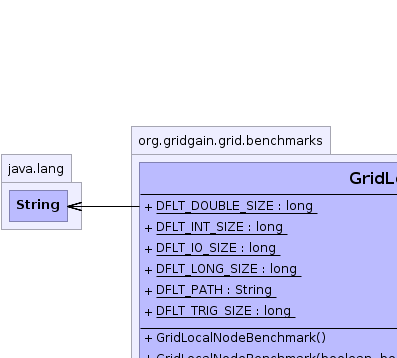
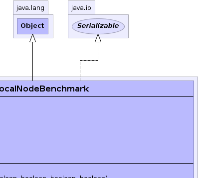
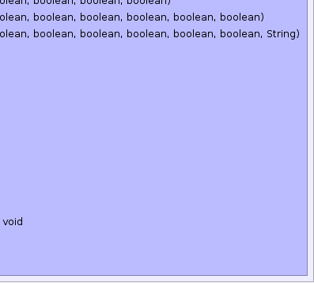

org.gridgain.grid.benchmarks.GridLocalNodeBenchmark
org.gridgain.grid.benchmarks.GridLocalNodeBenchmark
|
GridGain™ 3.5.0c
Community Edition |
|||||||||
| PREV CLASS NEXT CLASS | FRAMES NO FRAMES | |||||||||
| SUMMARY: NESTED | FIELD | CONSTR | METHOD | DETAIL: FIELD | CONSTR | METHOD | |||||||||
java.lang.Object
public class GridLocalNodeBenchmark
Auto-benchmarking facility for local node. This class represent Spring-friendly JavaBean that performs
requested benchmarks and exposes their
results (scores) via getters. This bean can be used by Spring configuration
to initialize local node attributes with benchmark values that can be later utilized by ForkJoin
logic in heterogeneous environment to perform a weighted split. Constructor of the JavaBean allows
to specify which benchmarks need to be executed, and method GridLocalNodeBenchmark.start() actually
executes them or loads them from local file store if they were previously saved (in Spring this
method would be an initialization method for this bean).
Note that benchmark scores don't depend directly on the size of the specific benchmark (since its score is weighted by the time). However, as a rule of the thumb a single benchmark that takes less than several seconds is likely to be inaccurate, and a single benchmark that takes more than a several minutes to complete is likely to be excessive.
Using default benchmark sizes will result in approximately 4 minutes running total for all 5
benchmarks on Pentium 4 3.0 GHz. It is recommended that benchmark caching is turned on (basically
flags loadResults and saveResults are set to true.
You can initialize local node benchmarks by adding/uncommenting the following section in GridGain Spring XML file:
<property name="userAttributes">
<map>
<entry key="grid.node.benchmark">
<bean class="org.gridgain.grid.benchmarks.GridLocalNodeBenchmark" init-method="start"/>
</entry>
</map>
</property>
You can configure load balancing to automatically use node benchmarks to distribute
jobs on the grid. Here is an example of how Spring XML configuration would look like:
<property name="loadBalancingSpi">
<bean class="org.gridgain.grid.spi.loadBalancing.adaptive.GridAdaptiveLoadBalancingSpi">
<property name="loadProbe">
<bean class="org.gridgain.grid.spi.loadBalancing.adaptive.GridAdaptiveBenchmarkLoadProbe">
<!-- Specify name of benchmark node attribute (the same as above). -->
<property name="benchmarkAttributeName" value="grid.node.benchmark"/>
<!-- Benchmarks scores to use. -->
<property name="useIntegerScore" value="true"/>
<property name="useLongScore" value="true"/>
<property name="useDoubleScore" value="true"/>
<property name="useIoScore" value="false"/>
<property name="useTrigonometryScore" value="false"/>
</bean>
</property>
</bean>
</property>
Please make sure to properly initialize this probe to use exactly the scores you need in your grid. For example, if your jobs don't do any I/O, then you probably should disable I/O score. If you are not doing any trigonometry calculations, then you should disable trigonometry score.
Original idea of these benchmarks is by Christopher W. Cowell-Shah.
| Wiki | |
| Forum |
|  |  |
 |
 |
| Field Summary | |
|---|---|
static long |
DFLT_DOUBLE_SIZE
Default benchmark size. |
static long |
DFLT_INT_SIZE
Default benchmark size. |
static long |
DFLT_IO_SIZE
Default benchmark size. |
static long |
DFLT_LONG_SIZE
Default benchmark size. |
static String |
DFLT_PATH
Default file path where benchmark results placed (value is work/benchmarks/localnode.xml). |
static long |
DFLT_TRIG_SIZE
Default benchmark size. |
| Constructor Summary | |
|---|---|
GridLocalNodeBenchmark()
Creates new bean with all benchmarks turned on. |
|
GridLocalNodeBenchmark(boolean runInt,
boolean runLong,
boolean runDouble,
boolean runTrig,
boolean runIo)
Creates new bean with specific benchmarks turned on and off. |
|
GridLocalNodeBenchmark(boolean runInt,
boolean runLong,
boolean runDouble,
boolean runTrig,
boolean runIo,
boolean loadResults,
boolean saveResults)
Creates new bean with specific benchmarks turned on and off. |
|
GridLocalNodeBenchmark(boolean runInt,
boolean runLong,
boolean runDouble,
boolean runTrig,
boolean runIo,
boolean loadResults,
boolean saveResults,
String filePath)
Creates new bean with specific benchmarks turned on and off. |
|
| Method Summary | |
|---|---|
long |
getDoubleScore()
Gets relative score of double operations for this benchmark on the local node. |
long |
getIntegerScore()
Gets relative score of int operations for this benchmark on the local node. |
long |
getIoScore()
Gets relative score of I/O operations for this benchmark on the local node. |
long |
getLongScore()
Gets relative score of long operations for this benchmark on the local node. |
long |
getTrigonometryScore()
Gets relative score of trigonometry operations for this benchmark on the local node. |
void |
runBenchmarks()
Runs all requested benchmarks. |
void |
setDoubleBenchmarkSize(long doubleSize)
Sets double benchmark size. |
void |
setIntegerBenchmarkSize(long intSize)
Sets int benchmark size. |
void |
setIoBenchmarkSize(long ioSize)
Sets I/O benchmark size. |
void |
setLongBenchmarkSize(long longSize)
Sets long benchmark size. |
void |
setTrigonometryBenchmarkSize(long trigSize)
Sets trigonometry benchmark size. |
void |
start()
Runs all requested benchmarks or load if benchmark results exist. |
String |
toString()
|
| Methods inherited from class java.lang.Object |
|---|
clone, equals, finalize, getClass, hashCode, notify, notifyAll, wait, wait, wait |
| Field Detail |
|---|
public static final long DFLT_INT_SIZE
public static final long DFLT_LONG_SIZE
public static final long DFLT_TRIG_SIZE
public static final long DFLT_DOUBLE_SIZE
public static final long DFLT_IO_SIZE
public static final String DFLT_PATH
work/benchmarks/localnode.xml).
| Constructor Detail |
|---|
public GridLocalNodeBenchmark()
Caching of benchmark results is turned on which means that every time an instance of this class is created, it will try to upload stored benchmark results from file system, if if not found, it will calculate benchmarks and then store them on the file system.
public GridLocalNodeBenchmark(boolean runInt,
boolean runLong,
boolean runDouble,
boolean runTrig,
boolean runIo)
Caching of benchmark results is turned on which means that every time an instance of this class is created, it will try to upload stored benchmark results from file system, if if not found, it will calculate benchmarks and then store them on the file system.
runInt - true to turn int benchmark on, false otherwise.runLong - true to turn long benchmark on, false otherwise.runDouble - true to turn double benchmark on, false otherwise.runTrig - true to turn trigonometry benchmark on, false otherwise.runIo - true to turn I/O benchmark on, false otherwise.
public GridLocalNodeBenchmark(boolean runInt,
boolean runLong,
boolean runDouble,
boolean runTrig,
boolean runIo,
boolean loadResults,
boolean saveResults)
runInt - true to turn int benchmark on, false otherwise.runLong - true to turn long benchmark on, false otherwise.runDouble - true to turn double benchmark on, false otherwise.runTrig - true to turn trigonometry benchmark on, false otherwise.runIo - true to turn I/O benchmark on, false otherwise.loadResults - true to load benchmark results from file, false ignore file.saveResults - true to save benchmark result in file, false otherwise.
public GridLocalNodeBenchmark(boolean runInt,
boolean runLong,
boolean runDouble,
boolean runTrig,
boolean runIo,
boolean loadResults,
boolean saveResults,
String filePath)
runInt - true to turn int benchmark on, false otherwise.runLong - true to turn long benchmark on, false otherwise.runDouble - true to turn double benchmark on, false otherwise.runTrig - true to turn trigonometry benchmark on, false otherwise.runIo - true to turn I/O benchmark on, false otherwise.loadResults - true to load benchmark results from file, false ignore file.saveResults - true to save benchmark result in file, false otherwise.filePath - Benchmark results file path. This should be either absolute or relative path within
GRIDGAIN_HOME. Benchmarks results will be loader and saved into this
file depending on flags loadResults and saveResults. Note that
default value is DFLT_PATH.| Method Detail |
|---|
public void start()
throws IllegalArgumentException
IllegalArgumentException - If loading of results is turned on and
results could not be loaded for whatever reason.public void runBenchmarks()
public void setIntegerBenchmarkSize(long intSize)
int benchmark size.
intSize - int benchmark size.public void setLongBenchmarkSize(long longSize)
long benchmark size.
longSize - long benchmark size.public void setDoubleBenchmarkSize(long doubleSize)
double benchmark size.
doubleSize - double benchmark size.public void setTrigonometryBenchmarkSize(long trigSize)
trigSize - Trigonometry benchmark size.public void setIoBenchmarkSize(long ioSize)
ioSize - I/O benchmark size.public long getIntegerScore()
int operations for this benchmark on the local node. Note
that this score is only relative to other int scores obtained from this benchmark on
this or other nodes. Note that scores for this benchmark can vary even on the same node
from run to run as they are executed in the same VM as grid instance itself and are thus
subject to all VM optimization configurations.
Higher score means better performance (faster execution of the benchmark). Minimum value is zero.
int operations for this benchmark. Higher score means
better performance (faster execution of the benchmark). Minimum value is zero.public long getLongScore()
long operations for this benchmark on the local node. Note
that this score is only relative to other long scores obtained from this benchmark on
this or other nodes. Note that scores for this benchmark can vary even on the same node
from run to run as they are executed in the same VM as grid instance itself and are thus
subject to all VM optimization configurations.
Higher score means better performance (faster execution of the benchmark). Minimum value is zero.
long operations for this benchmark. Higher score means
better performance (faster execution of the benchmark). Minimum value is zero.public long getDoubleScore()
double operations for this benchmark on the local node. Note
that this score is only relative to other double scores obtained from this benchmark on
this or other nodes. Note that scores for this benchmark can vary even on the same node
from run to run as they are executed in the same VM as grid instance itself and are thus
subject to all VM optimization configurations.
Higher score means better performance (faster execution of the benchmark). Minimum value is zero.
double operations for this benchmark. Higher score means
better performance (faster execution of the benchmark). Minimum value is zero.public long getTrigonometryScore()
Higher score means better performance (faster execution of the benchmark). Minimum value is zero.
public long getIoScore()
Higher score means better performance (faster execution of the benchmark). Minimum value is zero.
public String toString()
toString in class Object
|
GridGain™ 3.5.0c
Community Edition |
|||||||||
| PREV CLASS NEXT CLASS | FRAMES NO FRAMES | |||||||||
| SUMMARY: NESTED | FIELD | CONSTR | METHOD | DETAIL: FIELD | CONSTR | METHOD | |||||||||
|
GridGain - High Performance Cloud Computing
|
|

|
|